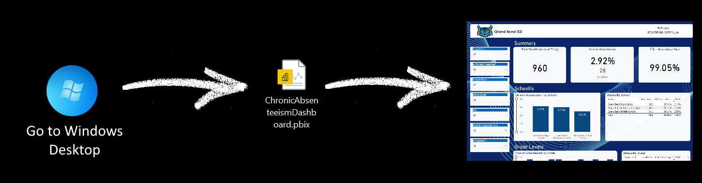
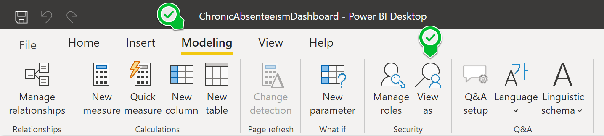

This Development Server Contains the Ed-Fi ODS / API & the Chronic Absenteeism Starter Kit
The purpose of this development server is to showcase the Chronic Absenteeism Starter Kit.
Ed-Fi Assets and Tools Installed on this Server
The Chronic Absenteeism Power BI Starter Kit
Open the Chronic Absenteeism Starter Kit by going to the server's desktop and clicking on the shortcut titled "ChronicAbsenteeismDashboard" as depicted below.
Once Power BI opens, locate the Modeling menu. Then proceed to click on "View as".

Use the following demo user accounts to experience what this dashboard would look like for different roles.
*Note: That you need to make sure you click only both checkboxes "Dynamic Role" and "Other user". Additionally, fill in the textbox infront of "Other user" with the email of the user you want to impersonate.

Demo User Accounts
| Position Title | Name | Email/Username |
|---|---|---|
| Superintendent at Grand Bend ISD | David Wilson | dwilson@edfidev.onmicrosoft.com |
| Principal at Grand Bend High | Alisa Cameron | acameron@edfidev.onmicrosoft.com |
| Principal at Grand Bend Middle | Marjorie Montoya | mmontoya@edfidev.onmicrosoft.com |
| Principal at Grand Bend Elementary | Chadwick Garner | cgarner@edfidev.onmicrosoft.com |
| Teacher at Grand Bend Elementary | Janet Reid | jreid@edfidev.onmicrosoft.com |
| Teacher at Grand Bend High | Russell Gomez | rgomez@edfidev.onmicrosoft.com |
| Teacher at Grand Bend High | Sara Preston | spreston@edfidev.onmicrosoft.com |
| Teacher at Grand Bend High | Trent Newton | tnewton@edfidev.onmicrosoft.com |
To learn more on how to use "The Chronic Absenteeism Starter Kit" please review the Ed-Fi Techdocs article: "Walkthrough: How To Use the CHRAB Power BI Dashboard"
SharedInstance Assets
- API - (Click here)
- Key: dqMi66UoBfLC
- Secret: j65JETyk1WNmWKd9tbqMtPUt
- Docs / Swagger - (Click here)
- Admin App - (Click here)
- User: test@ed-fi.org
- Password: Ed-Fi!sCool9